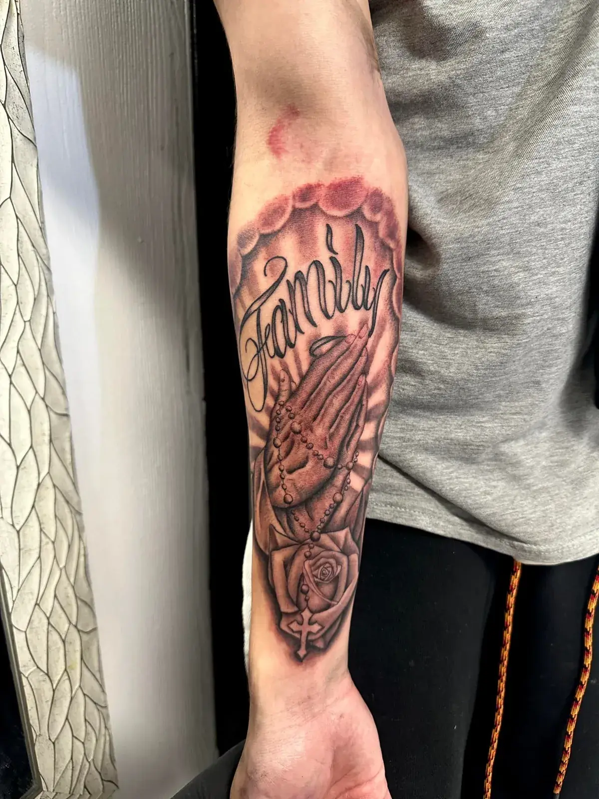

Bio-Organic Tattoos — My Signature Style
Freehand pieces built on bone texture — designs that move like they grew there.
The first time I saw a bio-organic tattoo, I knew it was the style I wanted to master. I spent a year studying it — collecting books, breaking down how the best work was built — before developing my own version. The signature of my work is bone texture: the small natural pitting you see in real bone, carried across the entire piece. It gives every tattoo depth and realism you can't get from smooth shading alone.
Every piece is freehand. You choose a direction from my sketches, and I draw the design directly onto your skin — so it follows your anatomy and moves with your body. No traced stencils, no flash. A piece built for your arm will never fit anyone else's.
Selected Bio-Organic Tattoos

New bio-organic pieces are added regularly — see the latest on Instagram or book a consultation to view recent projects.
How I work in this style
Freehand, always
Sketch direction from me, final drawing straight onto your body — never a traced stencil.
Bone texture
Natural pitting carried through the whole composition — the detail that makes the style read as real.
Creative freedom
My best work happens with clients who pick a direction, then give me room to build it. If you want an artist to "do their thing," that's exactly what I do.
A sleeve I redid twice
A full freehand sleeve on my apprentice took a year — because I redid it twice. My standard kept rising as my skill did, and I wasn't willing to leave earlier work on his arm. The sleeve I'm building now is taking less than half that time. That's what a year of obsessive improvement looks like.
The realism underneath it
I've also had the opportunity to study realism and portraiture under David Vega — regarded as one of the best black-and-grey realism artists in the world. That training shaped how I build depth and smoothness in my bio-organic work, and it's work I take on in its own right: portraits, wildlife and memorial pieces in black and grey or color.




Built to age well
I spent three years focused on fine line work, and it taught me what time does to a tattoo: tiny details without enough negative space blur together as skin ages. I design bio-organic pieces around that lesson — no detail smaller than what I know will hold, with breathing room built in so the piece still reads clean years from now.
The strongest cover-up style I know
Bio-organic is one of the strongest styles for covering old work. The deep values and organic flow can absorb almost anything underneath. If you have a tattoo you've outgrown, this is one of the best ways to replace it with something you're proud of. See cover-ups & reworks →
What a piece takes
I book eight-hour days, 10am to 6pm — the first hour or two is drawing on skin, the rest is tattooing. A full sleeve typically runs 4–8 sessions depending on arm size and whether we're covering old work or starting on clean skin. Coming from out of town? How traveling for a tattoo works.
Bio-Organic Tattoos — FAQ
What is a bio-organic tattoo?
A style built entirely from organic forms — bone, tissue, natural texture — with no machinery. I work it freehand, and my version is built on bone texture: the small natural pitting you see in real bone, carried across the whole piece.
Biomechanical vs bio-organic — what's the difference?
Biomechanical puts machinery under the skin — pistons, cables, plating. Bio-organic stays fully organic: bone, tissue and texture with no machine parts. Most people use the two terms interchangeably, and I take on both.
What is bone texture in a tattoo?
The small natural holes you see in real bone, carried across the entire tattoo. It's the signature of my work — it gives a piece depth and realism you can't get from smooth shading alone.
Can bio-organic tattoos cover up old tattoos?
Yes — it's one of the strongest styles for cover-ups. The deep values and organic flow can absorb almost anything underneath. Whether yours is coverable depends on what's there; I'll tell you honestly at the consultation.
How many sessions does a bio-organic sleeve take?
I book eight-hour days — the first hour or two is drawing on skin, the rest is tattooing. A full sleeve typically runs 4–8 sessions, depending on arm size and whether we're covering old work or starting clean.
Do bio-organic and dark realism tattoos age well?
That's the point of how I design them. Three years of fine line work taught me what time does to tiny detail — so I build these pieces with no detail smaller than what I know will hold, and negative space built in so they read clean years from now.
More styles by Carlos
Ready to start your bio-organic piece?
Free consultation, in person or remote. Based at Koi Dragon Tattoos in Murray, Utah — booking clients worldwide. Coming from out of town? How traveling for a tattoo works.